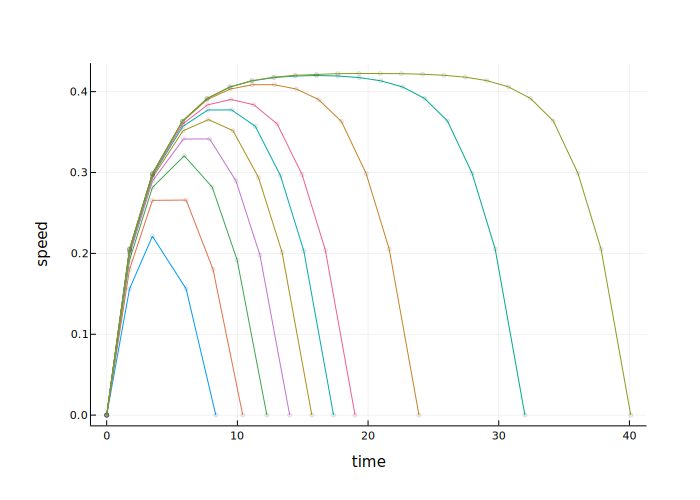
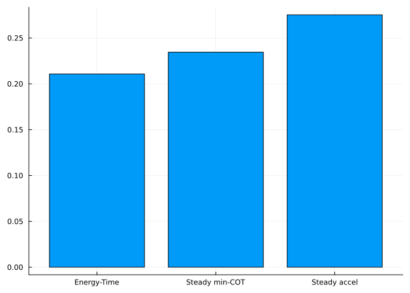
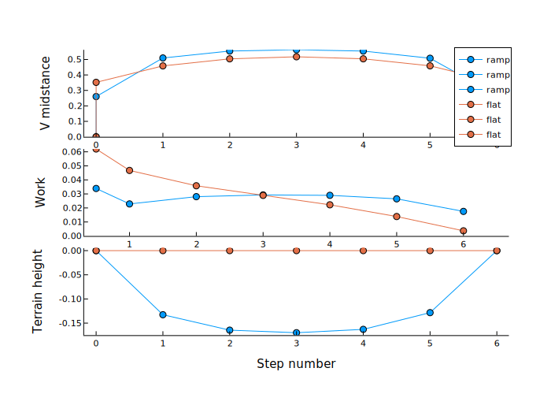

Take walks of varying distances, and show how the optimal trajectory has an inverted-U velocity profile, with peak speed that increases with distance up to about 12 steps. The cost function is total work, plus a linear cost of time with coefficient ctime.
Code
usingDynLoco, Plots; plotlyjs()wstar4 =findgait(WalkRW2l(α=0.35,safety=true), target=:speed=>0.3, varying=:P)ctime =0.015# cost of time, to encourage hurryingtchange =1.75# boundary condition time to get up to speed (arbitrary, excluded from optimization) p =plot() walksteps = [1, 2, 3, 4, 5, 6, 7, 10, 15, 20] # take walks of this # of stepsresults =Array{MultiStepResults,1}(undef,0) # store each optimization result herefor (i,nsteps) inenumerate(walksteps) result =optwalktime(wstar4, nsteps, ctime=ctime) # optimize with a cost of timeplotvees!(result, tchange=tchange, usespline=false, color=i, speedtype=:shortwalks, rampuporder=1, markersize=2) # plot instantaneous body speed vs. timepush!(results, result) # add this optimization to results arrayendPlots.display(p) # instantaneous speed vs. distance profiles
Speed vs time for short walks; each trace is a different bout distance

Compare three objectives: Energy-Time, min-COT, constant accel
Walk a fixed number of steps, starting and ending at rest. The objectives are:
Energy-Time minimizes total energy (positive work) plus proportional time cost
min-COT minimizes cost of transport (energy per weight and distance traveled)
Constant accel accelerates at a constant rate, to yield a triangular speed profile. Uses a minimum variance objective to produce a constant rate of velocity change.
Compare for a fixed number of steps.
Code
## Triangle walk, based on min var walkwstar4s =findgait(WalkRW2l(α=0.35,safety=true), target=:speed=>0.5, varying=:P)wstar4n =findgait(WalkRW2l(α=0.35, safety=true), target=:speed=>0.4, varying=:P)nsteps =10ctime =0.0195tchange =1.75nominalmsr=optwalktime(wstar4n, nsteps, ctime = ctime, boundarywork=true) # to compare with our usual solutionminvarmsr=optwalkvar(wstar4n, nsteps, boundarywork=true)A =1.9*wstar4s.vm/(nsteps*onestep(wstar4s).tf)v0 =0.11#0.8*A*tchange#0.12mintrimsr=optwalktriangle(wstar4n, nsteps, A = A, boundarywork=false,boundaryvels=(v0,v0))p =plot(layout=(1,2))plotvees!(p[1],nominalmsr, tchange=tchange, rampuporder=1, usespline =false, markershape=:circle,speedtype=:shortwalks)plotvees!(p[1],minvarmsr, tchange=tchange, rampuporder=1, usespline =false,markershape=:circle, speedtype=:shortwalks)plotvees!(p[1],mintrimsr, tchange=tchange, rampuporder=1, usespline =false,markershape=:circle, speedtype=:shortwalks, seriescolor=:auto)plot!(p[2],[0:nsteps+1], [1/2*nominalmsr.vm0^2; nominalmsr.steps.Pwork; NaN],markershape=:circle,seriescolor=:auto)plot!(p[2],[0:nsteps+1], [1/2*minvarmsr.vm0^2; minvarmsr.steps.Pwork; NaN],markershape=:circle,xticks=0:nsteps+1)plot!(p[2],[0:nsteps+1], [1/2*mintrimsr.vm0^2; mintrimsr.steps.Pwork; NaN],markershape=:circle,xticks=0:nsteps+1,seriescolor=:auto)plot!(p[2],xlabel="step", ylabel="push-off work", legend=false)energytimework =1/2*nominalmsr.vm0^2+sum(nominalmsr.steps.Pwork)mincotwork =1/2*minvarmsr.vm0^2+sum(minvarmsr.steps.Pwork)trianglework = (1/2*mintrimsr.vm0^2+sum(mintrimsr.steps.Pwork))/(1/2*nominalmsr.vm0^2+sum(nominalmsr.steps.Pwork))Plots.display(p)
energy-time work = 0.21077394712113307
min-COT = 0.23455721768541665
triangle = 0.2753143264615154
ratio = 1.1128378098390652
ratio = 1.3062066266818573

Code
usingMarkdownMarkdown.parse("""The energy-time work is $(threecosts[1]). The min-COT work is $(threecosts[2]).The const accel work is $(threecosts[3]).""")
The energy-time work is 0.21077394712113307. The min-COT work is 0.23455721768541665. The const accel work is 0.2753143264615154.
Brachistokuo ramp
Optimal slope and walk with ramp, compared with flat walking in same amount of time. We find six steps to be pretty good. Longer walks yield a smaller differene because there’s more time spent at a steady speed. Note: Currently solving for an asymmetric ramp profile, because pure symmetry constraint is slightly overconstrained for latest Ipopt.
Code
wstar =findgait(WalkRW2l(α=0.35,safety=true), target=:speed=>0.4, varying=:P)N =6walktime = N *onestep(wstar).tf *0.82# meant to be a brisk walkwalkdistance = N *onestep(wstar).steplengthrampresult =optwalkslope(wstar, N, boundaryvels = (0., 0.), symmetric =false, totaltime = walktime)p =multistepplot(rampresult; plotwork=true, label="ramp")println("ramp total cost = ", rampresult.totalcost)flatresult =optwalk(wstar, N, boundaryvels = (0., 0.), totaltime = rampresult.totaltime, δs =zeros(6))println("flat total cost = ", flatresult.totalcost)multistepplot!(flatresult; plotwork=true, label="flat")# optionally, try a reversed ramp and see if it's higher cost still#concaveresult = optwalk(wstar, 6, boundaryvels = (0.,0.), boundarywork=true,# totaltime = rampresult.totaltime, δ = -rampresult.δangles)#multistepplot!(concaveresult; plotwork=true)
ramp total cost = 0.1870530240274279
flat total cost =
0.21330138986318115

Brachistokuo ramp: Compute the cost for different speeds